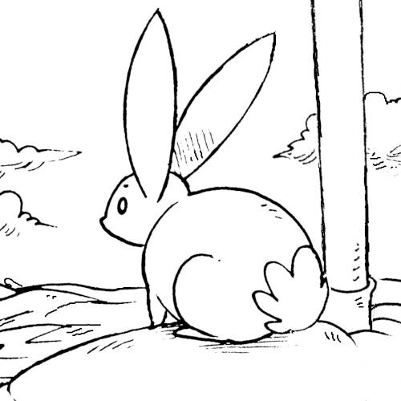
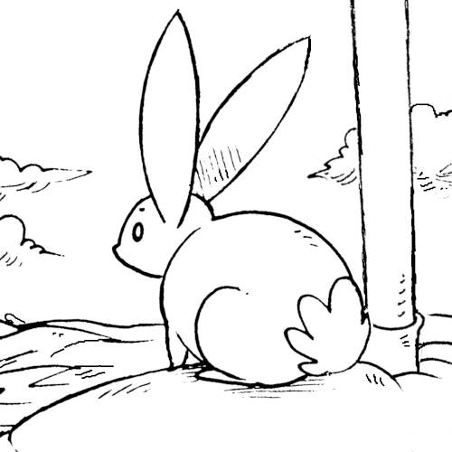
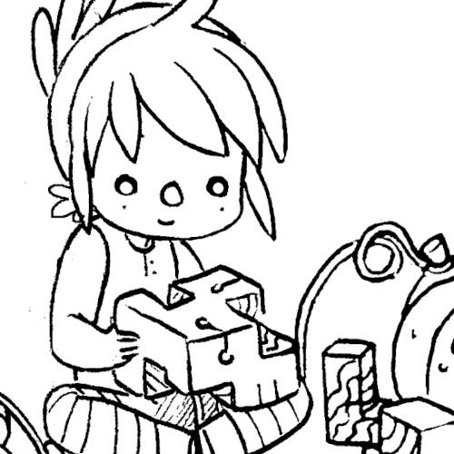
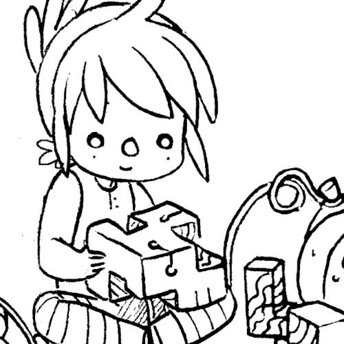

About
About Projects
Projects Books
Books Games
Games Stories
Stories Store
Store Notes
Notes How-to
How-toBiosonic was an event series organized by ActivePassive exploring the intersections of music, art and biodiversity. On March 5-12th 2023 devine & I traveled to Galiano Island for the event.
The drawings for the slideshow were drawn by hand, inked, scanned, lightly processed in GIMP and included in Adelie, our slideshow program.
During our week-long stay, we were kindly hosted at the LEÑA artist residency.
Talk
23.03.10. Galiano South Hall
Living on a sailboat with the aim to use less energy means that nature decides what you can do, and when. In this talk we explain how this way of doing things has affected how we live, how we make art, and how we view and use technology.
All of the photos featured below were taken by photographer Dayna Szyndrowski.

E*Collage*Y
23.03.10. Galiano South Hall
Earlier that same day, I attended and helped facilitate a collage workshop organized by Anju Singh. The aim of the workshop was to use collage as a storytelling vehicle to share our stories, experiences, and relationships with the ecology and biodiversity of the island and the space around us. I did a simple little collage of my own, using plants found on the islands.
The Show
23.03.11. Galiano South Hall
On the 11th, Devine and Anju performed a show together with Orca, with Reylinn on visuals. Watch the show here.
Thank you Amos and Caitlin for organizing this amazing event. Thank you Dayna and Avi for hosting us, and thank you to the amazing artists who performed at Biosonic: Anju Singh, Reylinn, Roo Wilson, Modern Biology, and Jeannine Georgeson.
I drew a series of illustrations for our slide show presentation:
 



 
